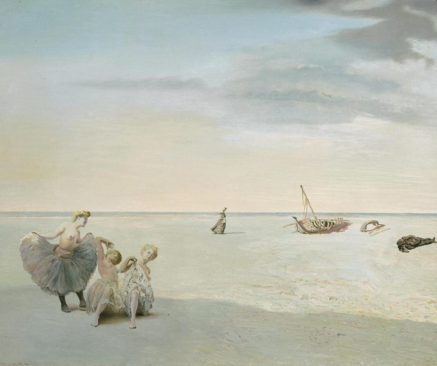
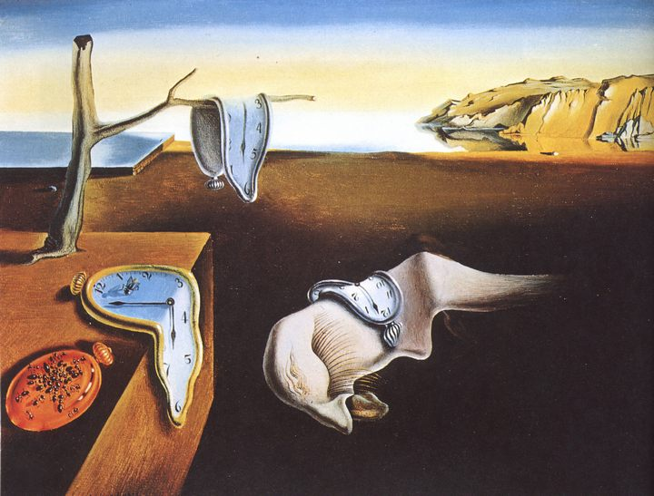
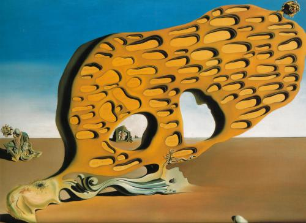
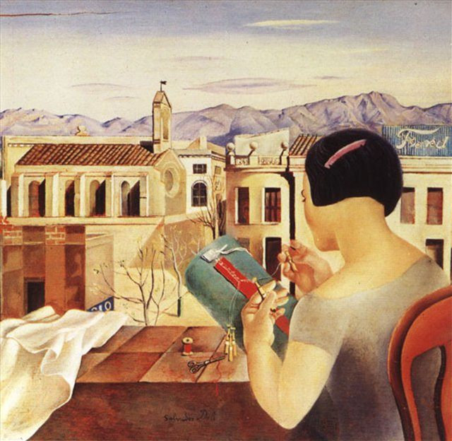
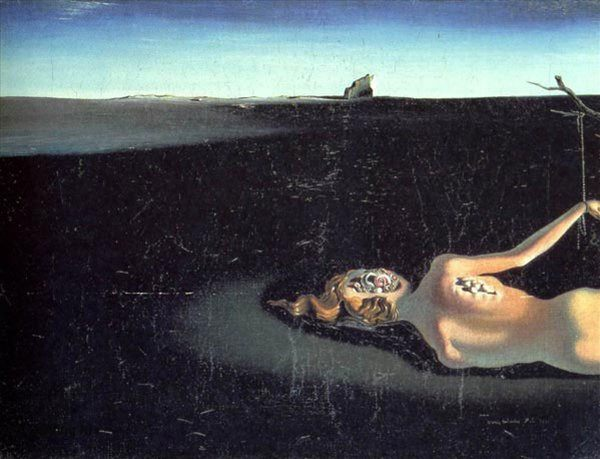
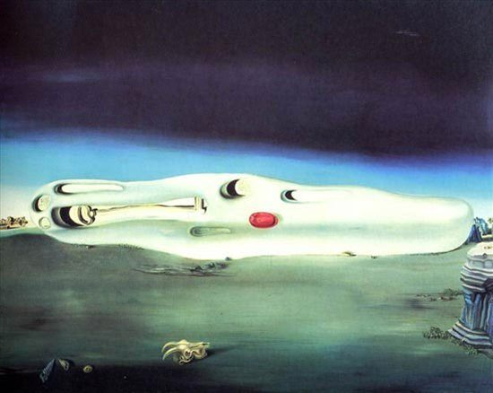

Великий и неординарный человек Сальвадор Дали родился в Испании в городе Фигерас в 1904 году 11 мая. Его родители были очень разные. Мать верила в бога, а отец наоборот, был атеистом. Отца Сальвадора Дали звали тоже Сальвадор. Многие считают, что Дали назвали в честь отца, но это не совсем так. Хоть у отца и сына были одинаковые имена, все же младшего Сальвадора Дали назвали в память о его брате, который умер не дожив до двухлетнего возраста. Это беспокоило будущего художника, он чувствовал себя двойником, каким-то отголоском прошлого. У Сальвадора была сестра, которая родилась в 1908 году. Читать далее...
Cуждения, действия, картины Сальвадора Дали, все носило легкий налет безумия. Этот человек был не просто художником сюрреалистом, он сам был воплощением сюрреализма.
Тем не менее, Дали пришел к сюрреализму далеко не сразу. Творчество Сальвадора Дали начиналось прежде всего с увлечения импрессионизмом и изучения приемов классической академической живописи. Первыми картинами Дали были пейзажи Фигераса, где еще не было и следов сюрреалистического видения мира. Читать далее...
Театр-музей Сальвадора Дали в Фигерасе — один из самых известных музеев, полностью посвященных жизни и творчеству знаменитому художнику Сальвадору Дали. Музей считается последней великой работой Сальвадора Дали: всё в нем было задумано и спроектировано самим художником.